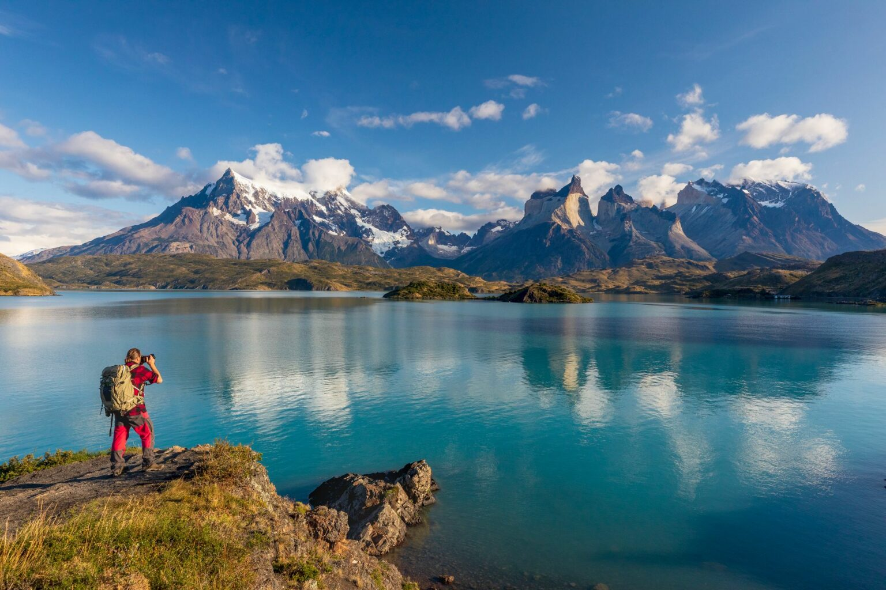

AmericaGo
Argentina
Argentina, una nación de contrastes y pasiones que se despliegan a lo largo y ancho de América del Sur, es un país que abraza desde la majestuosidad de los Andes hasta la belleza de sus costas en el Atlántico. Con una cultura rica y diversa, Argentina es conocida por su tango apasionado, su fútbol fervoroso y su legado literario y artístico que ha dejado huella en todo el mundo. Desde la sofisticación de Buenos Aires, una ciudad que late al ritmo del tango y ofrece arquitectura europea, teatros y vida nocturna vibrante, hasta la inmensidad de la Pampa, donde las llanuras se extienden hasta el horizonte, Argentina es un país de dimensiones asombrosas.
Patagonia

La Patagonia, un rincón remoto y mágico en el extremo sur de América del Sur, es una tierra de belleza imponente y naturaleza salvaje. Con sus vastas extensiones de tundra, montañas majestuosas, glaciares brillantes y costas escarpadas, la Patagonia es un paraíso para los amantes de la aventura y los paisajes inexplorados. Desde el viento que barre la estepa hasta la quietud de los glaciares, la Patagonia te envuelve en una sensación de lejanía y maravilla natural. Es un lugar donde la naturaleza ruge y susurra a la vez, donde la vastedad del paisaje te invita a contemplar la grandeza de la Tierra y a reconectar con la esencia prístina de la naturaleza.